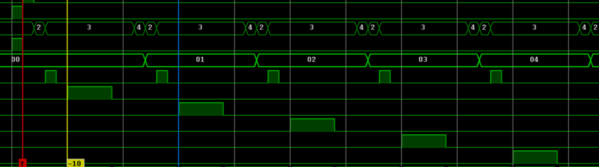

Pedestal#
The measurement of pedestals on both High and Low gain paths is implemented triggering the charge sampling when no signal trigger is present.
Pedestal is setup in 2 steps:
- generation of pedestal time base (common to all channel)
- setup period
- setup staggering
- pedestal enable (channel by channel)
The generation of pedestal timing is always active, then it must be enabled on the channel.
Time base generation#
The time resolution of the pedestal time base is 50us. A 16-bit register holds the value to program the desired value of the time base, which is used by channels to sample the pedestal value at regulare intervals. As an example, commands p and h of the GUI interface are pre-programmed to enable pedestal taking at, respectively, 4kHz (time base register = 5) and 10Hz (time base register = 2000). The register default value is 5, which yields a period of 250us.
The time base generation is started when the pedestal acquisition is enabled on one channel.
The time base is common to all channels: to differentiate the frequency of each channel, the procedure is to change the period and start a new data taking only for a specific channel.
The generation of the time base is always on (unless explictly disabled).
Slow control command#
The slow control command which controls pedestal period is the following:
SET DIGx PEDPERIOD val
where:
xis the digitizer number (0/1)valis the period value, which ranges from 0 to 65535; period is expressed in 50us units, and must be greater than 0. A value of 1 produces a 20kHz period.
Stagger setup#
To avoid overlapping between channels when sampling pedestals, there is a mechanism to stagger pedestal pulses of a desired amount of time. An 8-bit register stores the number of clock cycles of the 96MHz clock (~10.4ns), which separate the pedestal data taking on one channel from the successive. A value of 0 means no staggering. The default value is 96, which yields a 1us distance between pedestal sampling: the total sampling process will take this number multiplied by the number of channels, which is usually 18, 12 IDs plus 6 ODs.
Since the pedestal output pulse is at least 4 clock cycles wide, the minimum acceptable value for stagger register is 6: for values lower than 6, the pedestal trigger is issued at the same time for all the enabled channels.

Slow control command#
The slow control command which controls pedestal stagger is the following:
SET DIGx PEDSTAG val
where:
xis the digitizer number (0/1)valis the stagger value, which ranges from 0 to 255; this is the distance in time between two triggers of two contiguous channels. Values lower than 6 trigger pedestal at the same time. A value of 10 parts the pedestal pulses of ~104ns.
Channel by Channel Enable#
A specific command enables pedestal acquisition. To get the measurement, the aquisition or, at least, the front-end must be enabled.
Slow control command#
The slow control command which controls pedestal enable/disable is the following:
SET DIGx PEDTYPE ch val
where:
xis the digitizer number (0/1)chis the digitizer channel number (0-17)valis 0 to disable pedestal and 1 to enable pedestal.